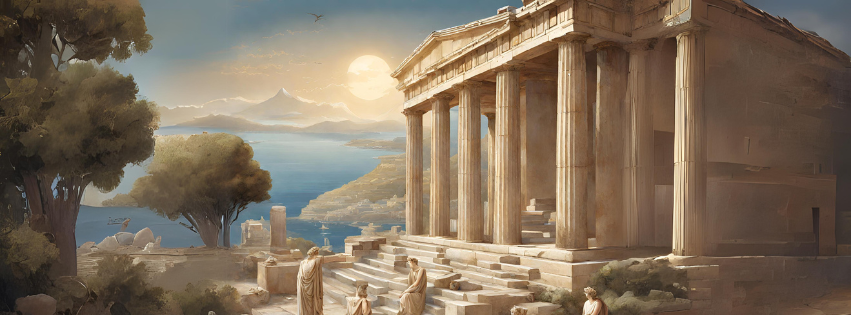
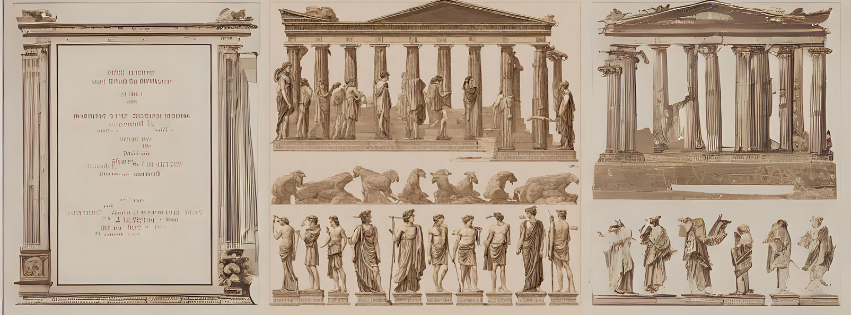

Civilização
A civilização da Grécia Antiga é um dos períodos mais fascinantes da história ocidental, repleto de conquistas culturais, políticas e filosóficas que continuam a influenciar o mundo contemporâneo. Durante esse período, que se estende aproximadamente do século VIII a.C. ao século IV a.C., os gregos desenvolveram uma sociedade complexa e vibrante que deixou um legado duradouro.
A Grécia Antiga foi o berço da democracia, com cidades-estado como Atenas estabelecendo sistemas políticos nos quais os cidadãos participavam ativamente do governo e das decisões públicas. Esse modelo democrático, embora limitado em termos de participação (pois excluía mulheres, escravos e estrangeiros), representou um avanço significativo na época e influenciou futuras formas de governo em todo o mundo.
Além de seus feitos políticos, os gregos antigos foram notáveis por suas realizações culturais. Na arte, arquitetura, literatura e filosofia, os gregos produziram algumas das obras mais reverenciadas da história. Desde os épicos homéricos como a Ilíada e a Odisseia até as tragédias de Sófocles, Eurípides e Ésquilo, a literatura grega antiga continua a ser estudada e apreciada por sua profundidade e complexidade.
Na filosofia, pensadores como Sócrates, Platão e Aristóteles desafiaram as concepções tradicionais sobre o mundo e o conhecimento, estabelecendo os fundamentos da investigação racional e do pensamento crítico que moldaram o pensamento ocidental. Suas ideias sobre ética, política, metafísica e lógica continuam a ser discutidas e debatidas nos dias de hoje.
A contribuição dos gregos antigos para a ciência e a matemática também foi significativa. Pensadores como Pitágoras e Euclides estabeleceram os princípios fundamentais da geometria e da matemática, enquanto Hipócrates é considerado o pai da medicina ocidental, com suas ideias revolucionárias sobre a saúde e a doença.
Em resumo, a civilização da Grécia Antiga representa um período de grande criatividade e inovação, cujo impacto ressoa até os dias de hoje. Seja na política, na arte, na filosofia ou na ciência, os gregos antigos deixaram um legado duradouro que continua a moldar nossa compreensão do mundo e de nós mesmos.
